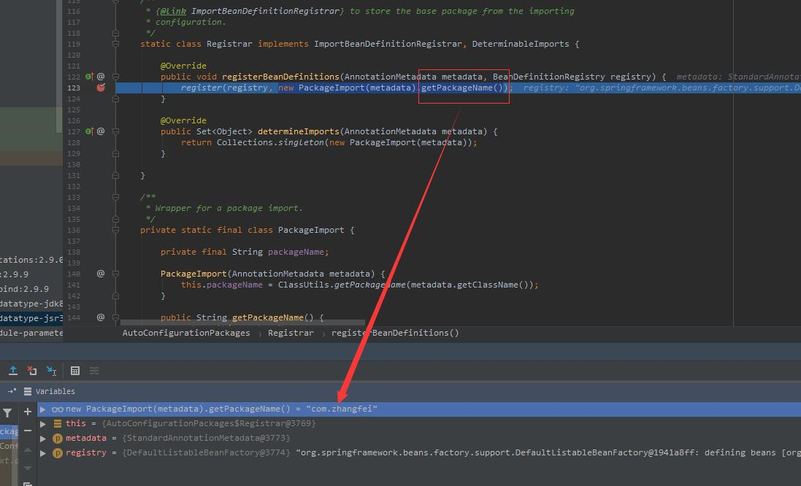
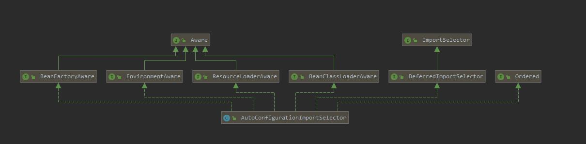

一切的开始要从SpringbootApplication注解说起。
@SpringBootApplication
public class MyBootApplication {
public static void main(String[] args) {
SpringApplication.run(MyBootApplication.class);
}
}
@SpringBootConfiguration
@EnableAutoConfiguration
@ComponentScan
public @interface SpringBootApplication {
}其中最重要的就是EnableAutoConfiguration注解，开启自动配置。
@Target({ElementType.TYPE})
@Retention(RetentionPolicy.RUNTIME)
@Documented
@Inherited
@AutoConfigurationPackage
@Import({AutoConfigurationImportSelector.class})
public @interface EnableAutoConfiguration {
String ENABLED_OVERRIDE_PROPERTY = "spring.boot.enableautoconfiguration";
Class<?>[] exclude() default {};
String[] excludeName() default {};
}通过Import注解导入AutoConfigurationImportSelector。在这个类中加载/META-INF/spring.factories文件的信息，然后筛选出以EnableAutoConfiguration为key的数据，加载到IOC容器中，实现自动配置功能。
@Target(ElementType.TYPE)
@Retention(RetentionPolicy.RUNTIME)
@Documented
@Inherited
@Import(AutoConfigurationPackages.Registrar.class)
public @interface AutoConfigurationPackage {
}
从表面看就是自动配置包，主要使用了Import注解，导入了Registrar类。这里Registrar类的registerBeanDefinitions方法导包，也就是导入当前main函数所在路径的包地址，我这里是com.zhangfei。

Import({AutoConfigurationImportSelector.class})该注解给当前配置类导入另外N个自动配置类。
这里既然导入N个自动配置类，那么都导入哪些类呢？
//AutoConfigurationImportSelector实现DeferredImportSelector接口，而DeferredImportSelector接口又继承了ImportSelector
public interface ImportSelector {
String[] selectImports(AnnotationMetadata var1);
}
AutoConfigurationImportSelector通过实现接口ImportSelector的selectImports方法返回需要导入的组件，selectImports方法返回一个全类名字符串数组。
//AutoConfigurationImportSelector.java
@Override
public String[] selectImports(AnnotationMetadata annotationMetadata) {
if (!isEnabled(annotationMetadata)) {
return NO_IMPORTS;
}
AutoConfigurationMetadata autoConfigurationMetadata = AutoConfigurationMetadataLoader.loadMetadata(this.beanClassLoader);
AutoConfigurationEntry autoConfigurationEntry = getAutoConfigurationEntry(autoConfigurationMetadata,annotationMetadata);
return StringUtils.toStringArray(autoConfigurationEntry.getConfigurations());
}
protected AutoConfigurationEntry getAutoConfigurationEntry(AutoConfigurationMetadata autoConfigurationMetadata,AnnotationMetadata annotationMetadata) {
if (!isEnabled(annotationMetadata)) {
return EMPTY_ENTRY;
}
AnnotationAttributes attributes = getAttributes(annotationMetadata);
List<String> configurations = getCandidateConfigurations(annotationMetadata, attributes);
configurations = removeDuplicates(configurations);
Set<String> exclusions = getExclusions(annotationMetadata, attributes);
checkExcludedClasses(configurations, exclusions);
configurations.removeAll(exclusions);
configurations = filter(configurations, autoConfigurationMetadata);
fireAutoConfigurationImportEvents(configurations, exclusions);
return new AutoConfigurationEntry(configurations, exclusions);
}
protected List<String> getCandidateConfigurations(AnnotationMetadata metadata, AnnotationAttributes attributes) {
List<String> configurations = SpringFactoriesLoader.loadFactoryNames(getSpringFactoriesLoaderFactoryClass(),getBeanClassLoader());
return configurations;
}
这里又开始调用SpringFactoriesLoader.loadFactoryNames。
SpringFactoriesLoader.loadFactoryNames方法中关键的三步：
(1)从当前项目的类路径中获取所有 META-INF/spring.factories 这个文件下的信息.
(2)将上面获取到的信息封装成一个 Map 返回，EnableAutoConfiguration为key。
(3)从返回的Map中通过刚才传入的 EnableAutoConfiguration.class参数，获取该 key 下的所有值。
public static List<String> loadFactoryNames(Class<?> factoryClass, @Nullable ClassLoader classLoader) {
String factoryClassName = factoryClass.getName();
return (List)loadSpringFactories(classLoader).getOrDefault(factoryClassName, Collections.emptyList());
}
private static Map<String, List<String>> loadSpringFactories(@Nullable ClassLoader classLoader) {
MultiValueMap<String, String> result = (MultiValueMap)cache.get(classLoader);
if (result != null) {
return result;
} else {
try {
Enumeration<URL> urls = classLoader != null ? classLoader.getResources("META-INF/spring.factories") : ClassLoader.getSystemResources("META-INF/spring.factories");
LinkedMultiValueMap result = new LinkedMultiValueMap();
while(urls.hasMoreElements()) {
URL url = (URL)urls.nextElement();
UrlResource resource = new UrlResource(url);
Properties properties = PropertiesLoaderUtils.loadProperties(resource);
Iterator var6 = properties.entrySet().iterator();
while(var6.hasNext()) {
Entry<?, ?> entry = (Entry)var6.next();
String factoryClassName = ((String)entry.getKey()).trim();
String[] var9 = StringUtils.commaDelimitedListToStringArray((String)entry.getValue());
int var10 = var9.length;
for(int var11 = 0; var11 < var10; ++var11) {
String factoryName = var9[var11];
result.add(factoryClassName, factoryName.trim());
}
}
}
cache.put(classLoader, result);
return result;
} catch (IOException var13) {
throw new IllegalArgumentException("Unable to load factories from location [META-INF/spring.factories]", var13);
}
}
}# Auto Configure
org.springframework.boot.autoconfigure.EnableAutoConfiguration=\
org.springframework.boot.autoconfigure.admin.SpringApplicationAdminJmxAutoConfiguration,\
org.springframework.boot.autoconfigure.aop.AopAutoConfiguration,\
org.springframework.boot.autoconfigure.amqp.RabbitAutoConfiguration,\
org.springframework.boot.autoconfigure.batch.BatchAutoConfiguration,\
org.springframework.boot.autoconfigure.cache.CacheAutoConfiguration,\
...其他省略在spring.factories文件中看到的都是自动配置类，那么自动配置用到的属性值在那里呢？我们拿出redis为例
@Configuration
@ConditionalOnClass(RedisOperations.class) //判断当前项目有没有这个类RedisOperations.class
@EnableConfigurationProperties(RedisProperties.class) //启用配置属性，这里看到了熟悉的XXXProperties
@Import({ LettuceConnectionConfiguration.class, JedisConnectionConfiguration.class }) //导入这两个类
public class RedisAutoConfiguration {
@Bean
@ConditionalOnMissingBean(name = "redisTemplate")
public RedisTemplate<Object, Object> redisTemplate(RedisConnectionFactory redisConnectionFactory)
throws UnknownHostException {
RedisTemplate<Object, Object> template = new RedisTemplate<>();
template.setConnectionFactory(redisConnectionFactory);
return template;
}
@Bean
@ConditionalOnMissingBean
public StringRedisTemplate stringRedisTemplate(RedisConnectionFactory redisConnectionFactory)
throws UnknownHostException {
StringRedisTemplate template = new StringRedisTemplate();
template.setConnectionFactory(redisConnectionFactory);
return template;
}
}
//这里则保存redis初始化时的属性
@ConfigurationProperties(prefix = "spring.redis")
public class RedisProperties {
private int database = 0;
private String url;
private String host = "localhost";
private String password;
private int port = 6379;
private boolean ssl;
}